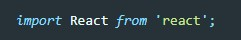
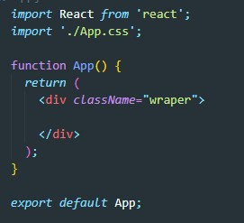
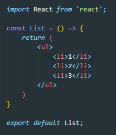
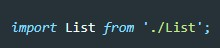
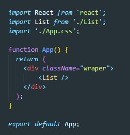
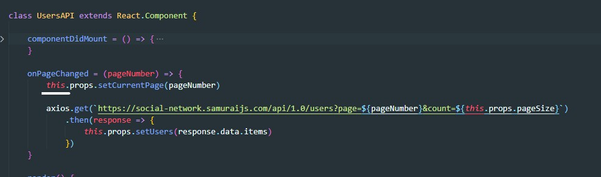
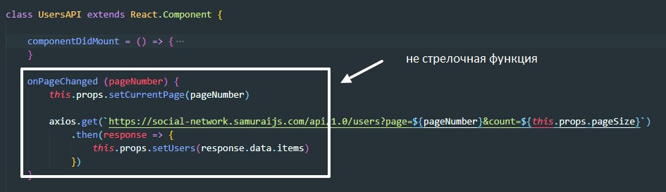
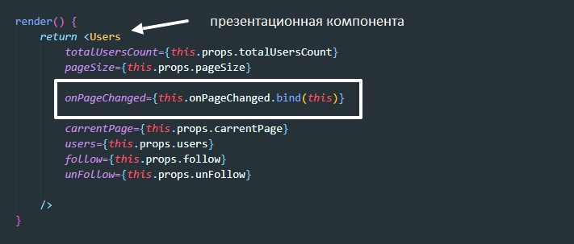

Компонента - это функция которая возвращает разметку JSX. Важно что бы название комоненты начиналось с заглавной буквы.
Во все компоненты должен быть импортирован компонент React
Компонента может включать в себя другие компоненты. Что бы вставить компоненту в разметку другой компоненты используется тег с названием компоненты.
Пример:
Допустим у нас есть стандартный файл App.js c вот таким содержимым:
Создадим еще один файл, назовем его List.js. Внутри этого файла мы создадим функцию которая будет возвращать JSX разметку с обыкновенным списком:
Теперь что бы файл App видел наш файл List нужно в импорте прописать строчку
Теперь что бы вставить List в App мы помещаем в разметку App тег List
существует несколько типов компонент:
Презентационная - это чистая функция. которая принимает пропсы и возвращает JSX код. Эта компонента не должна напрямую работать со STATE и не должна иметь side effect
Контейнерная - служит для обеспечения презентационной компоненту данными из store
Классовая - классовая компонента может быть как презентационной так и контейнером.
Бывают случаи когда в контейнерной компоненте (в файле компоненты) у нас могут быть объявлены две компоненты. 1 создана при помощт connect библиотеки react-redux 2. - это классовая компонента которая принимает пропсы от контейнерной (созданной с помощью connect)? так же она делает AJAX запросы на серв и передает пропсы полученные от контейнерной (созданной с помощью connect) и данные поулченные с сервера. Важно то что при создании методов классовой компоненты мы можем потерять контекст вызова. Например:
d данном примере контекст не будет потерян, так как мы объявили метод через стрелочную функцию, контекст будет потерян если мы объявим метод вот так:
Что бы не потерять контекст в этом случае во время передачи callback через пропсы мы используем метод передачи контекста bind
Пропсы в презентационную компоненту мы прокидываем как обычно